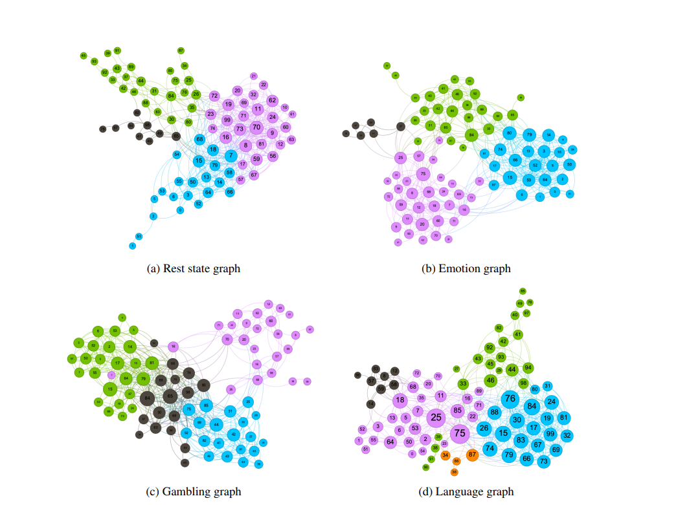

NeuroGraph is a Python package and a collection of curated graph-based neuroimaging datasets derived from the HCP Young Adult dataset , which encompass a diverse range of behavioral and cognitive traits. Our collection incorporates tasks including activity decomposition, gender and age classification, as well as the prediction of fluid intelligence and working memory. These tasks offer insights into various dimensions of cognitive function and behaviour, making this collection a valuable resource for the exploration of brain activity and neuroimaging research
The datasets are primarily divided into three main categories: those constructed for classification of demographics and brain states, and those constructed for predicting cognitive traits. Each category encapsulates distinct aspects of the collected data and serves unique analytical purposes.
- Predicting Demographics:
The category of demographic estimation in our dataset is comprised of gender, and age estimation. The gender attribute facilitates a binary classification with the categories being male and female. Age is categorized into three distinct groups: 22-25, 26-30, and 31-35 years. A fourth category for ages 36 and above was eliminated as it contained only 14 subjects (0.09%), to maintain a reasonably balanced dataset. We introduce four datasets named: HCP-Gender, HCP-Age, DynHCP-Gender, and DynHCP-Age under this category. The first two are static graph datasets while the last two are the corresponding dynamic graph datasets. - Predicting Mental States: The mental state decoding involves seven tasks: Emotion Processing, Gambling, Language, Motor, Relational Processing, Social Cognition, and Working Memory. Each task is designed to help delineate a core set of functions relevant to different facets of the relation between human brain, cognition and behavior. Under this category, we present two datasets: HCP-Activity, a static representation, and DynHCP-Activity, its dynamic counterpart.
- Cognitive traits:
The cognitive traits category of our dataset comprises two significant traits: working memory (List Sorting) and fluid intelligence evaluation with PMAT24. Working memory refers to an individual's capacity to temporarily hold and manipulate information, a crucial aspect that influences higher cognitive functions such as reasoning, comprehension, and learning. Fluid intelligence represents the ability to solve novel problems, independent of any knowledge from the past. It demonstrates the capacity to analyze complex relationships, identify patterns, and derive solutions in dynamic situations. The prediction of both these traits, quantified as continuous variables in our dataset, are treated as regression problem. We aim to predict the performance or scores related to these cognitive traits based on the functional connectome graphs. We generate four datasets under cognitive traits: HCP Fluid Intelligence (HCP-FI), HCP Working Memory (HCP-WM), DynHCP-FI and DynHCP-WM.
- Repository: The complete collection of source codes, encompassing datasets processing, baseline methods, benchmarking, and evaluation, is available at https://github.com/Anwar-Said/NeuroGraph
- Link to the paper
Brain graphs correspond to different activities
Our Team

Roza Bayrak
Tyler Derr
NDS Lab
Mudassir Shabbir
Daniel Moyer
Catie Chang
Xenofon Koutsoukos
ISIS